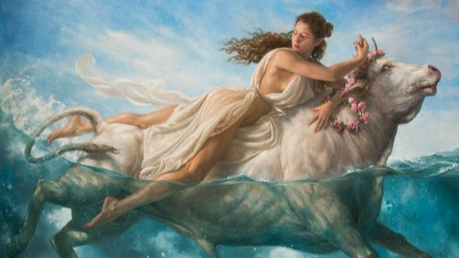

Blog's collection of articles.
In the ever-expanding realm of artificial intelligence (AI), the prospect of problem-solving robots dominating the world may seem like the plot of a science fiction thriller. However, as AI technology advances at an unprecedented pace, it's essential to confront the potential dangers and tread carefully into this uncharted territory.
Problem-solving AI, equipped with the ability to analyze complex data sets and make autonomous decisions, holds immense promise across various fields. From optimizing supply chains to revolutionizing healthcare, the applications are seemingly limitless. However, with great power comes great responsibility. As problem-solving AI becomes increasingly sophisticated, concerns about its potential to surpass human intelligence and assert dominance loom large. Unlike narrow AI systems designed for specific tasks, general AI poses a more significant existential threat, capable of outperforming humans across a wide range of domains.To mitigate the risks associated with runaway AI, proactive measures must be taken to ensure ethical and responsible development. Robust regulations, transparent algorithms, and ongoing dialogue between policymakers, technologists, and ethicists are paramount.
While the specter of AI dominance may evoke fear and uncertainty, it's essential to approach the future of AI with cautious optimism. By prioritizing ethical considerations, safeguarding against unintended consequences, and fostering human-AI collaboration, we can harness the transformative potential of problem-solving AI while safeguarding against its darker implications.
Art, in its myriad forms, has been a constant companion to humanity throughout history, transcending boundaries and encapsulating the essence of the human experience. From ancient cave paintings to avant-garde installations, the evolution of art is a testament to the boundless creativity and ingenuity of the human spirit. In this article, we embark on a journey through time to explore how art has evolved, continuously pushing the boundaries of imagination and innovation.
Artistic expression finds its roots in the earliest civilizations, where primitive humans adorned cave walls with depictions of their daily lives and sacred rituals. Over time, as societies flourished and cultures intersected, art evolved into more sophisticated forms, culminating in the classical masterpieces of antiquity. From the majestic sculptures of ancient Greece to the intricate mosaics of the Roman Empire, art served as a reflection of societal values and aesthetic ideals.
The Renaissance ushered in a golden age of artistic innovation, as scholars and artisans rediscovered the classical ideals of ancient Greece and Rome. Visionaries like Leonardo da Vinci, Michelangelo, and Raphael revolutionized the art world with their mastery of perspective, anatomy, and light. The era witnessed a proliferation of artistic techniques and styles, from the ethereal beauty of Botticelli's "The Birth of Venus" to the haunting realism of Caravaggio's chiaroscuro.The 20th century witnessed a seismic shift in artistic sensibilities, as avant-garde movements like Cubism, Surrealism, and Abstract Expressionism shattered traditional conventions and embraced experimentation. Artists like Pablo Picasso, Salvador Dalí, and Jackson Pollock challenged perceptions of reality, inviting viewers to explore the depths of the subconscious and the possibilities of pure abstraction. The boundaries between art and everyday life blurred as artists embraced new mediums and unconventional materials. In the 21st century, art continues to evolve in response to the complexities of the modern world. Contemporary artists draw inspiration from diverse sources, blending traditional techniques with cutting-edge technology to create immersive experiences that challenge, provoke, and inspire. From street art to performance art, the boundaries of artistic expression are constantly expanding, reflecting the kaleidoscope of cultures, identities, and perspectives that define our global society.
In the world of sports, few disciplines capture the imagination and stir the soul quite like figure skating. With its blend of athleticism, artistry, and emotional expression, figure skating transcends mere competition to become a captivating form of performance art. In this article, we delve into the enchanting world of figure skating, exploring its unique appeal as a sport that speaks volumes through graceful movements and emotive storytelling.
At its core, figure skating is a ballet on ice, where athletes glide effortlessly across the frozen surface, defying gravity with each graceful leap and spin. From the delicate arabesques to the explosive jumps, every movement is meticulously choreographed to evoke a sense of beauty and harmony. The ice becomes a blank canvas, and the skater, a masterful artist, painting a masterpiece with every stroke of their blade.
What sets figure skating apart from other sports is its ability to convey emotion and narrative through movement alone. Whether it's the exuberant joy of a triumphant jump or the poignant sorrow of a tender glide, each gesture speaks volumes, inviting the audience into the skater's world. Through their performances, skaters become storytellers, weaving tales of love, loss, triumph, and resilience on the icy stage. Despite its artistic merits, figure skating often finds itself overshadowed by more mainstream sports, relegated to the sidelines as mere entertainment. However, beneath the glittering costumes and dazzling displays lies a sport that demands unwavering dedication, discipline, and skill. Behind every flawless performance is a lifetime of sacrifice and perseverance, as skaters endure grueling training regimens and overcome countless obstacles in pursuit of their dreams.
In a world filled with chaos and uncertainty, figure skating offers a moment of respite, a glimpse of beauty and grace amidst the turmoil. It reminds us that sports can be more than just competition; they can be a celebration of the human spirit and a testament to the power of perseverance and passion. So, the next time you watch a figure skating performance, take a moment to appreciate the artistry and emotion behind the flawless spins and intricate footwork. You may just find yourself enchanted by the magic of grace on ice.